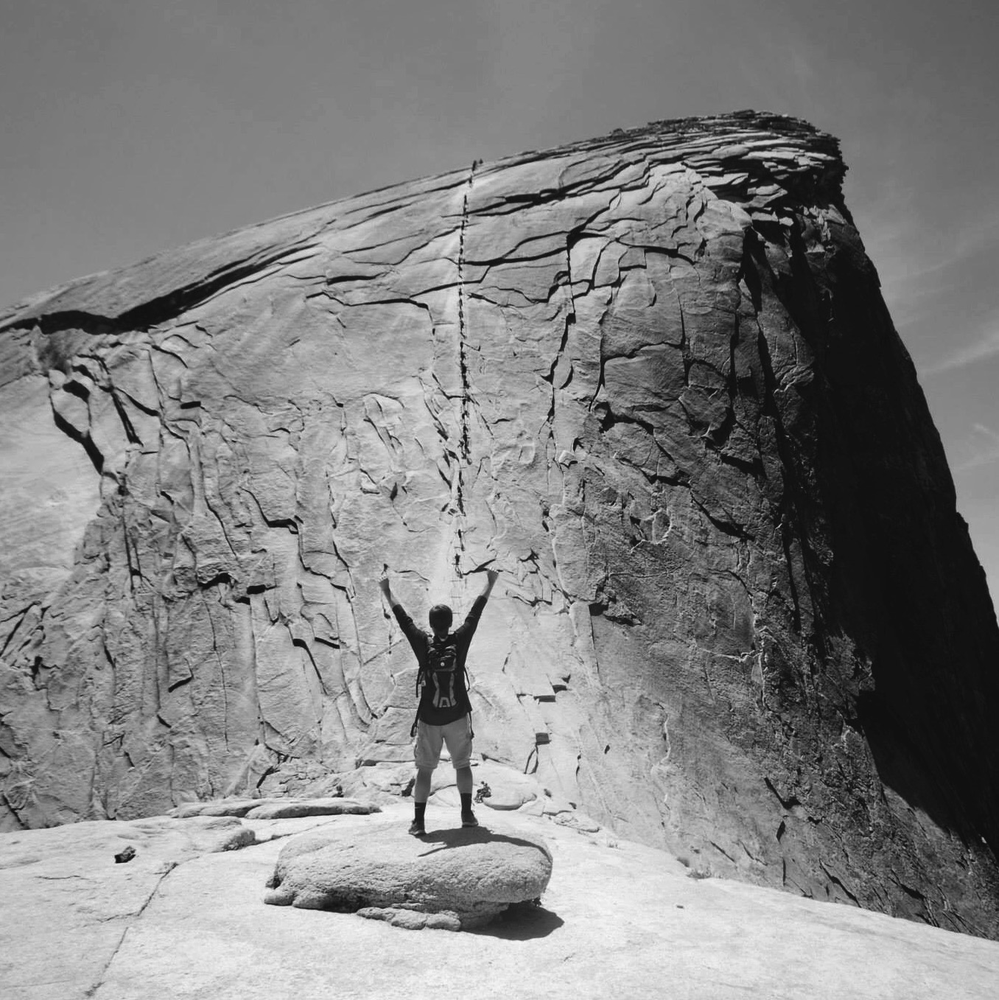

About Me
Learner || In each opportunity I have, it's my goal to learn quickly and efficiently while also not being afraid to break new ground and explore new topics and information. I strive to share knowledge with others around me and collaborate.
Initiator || I seek to ask questions and understand, and when problems come up, I make a point to utilize the resources and knowledge I have to resolve them. It's a goal of mine to continuously challenge myself to make the first move and communicate clearly.
Creator || I aim to develop creative solutions in each capacity I am in and think outside the box. I love creating and building, and through those things mastering skills to enable myself to present solutions to make people's lives easier. I am at my best when focused and collaborating with a team on projects.